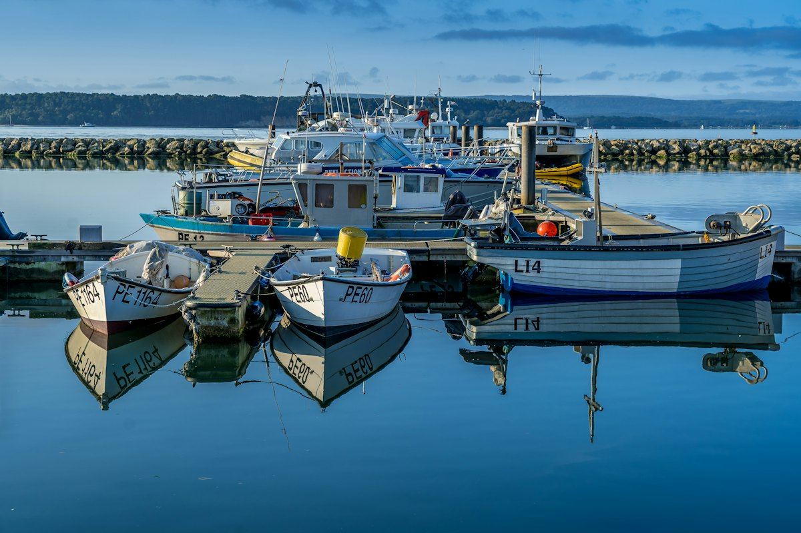
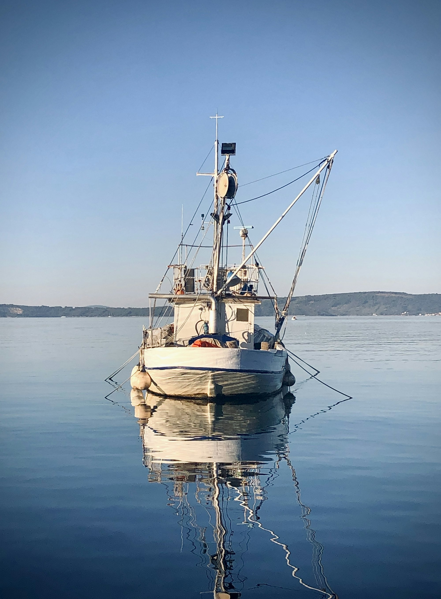
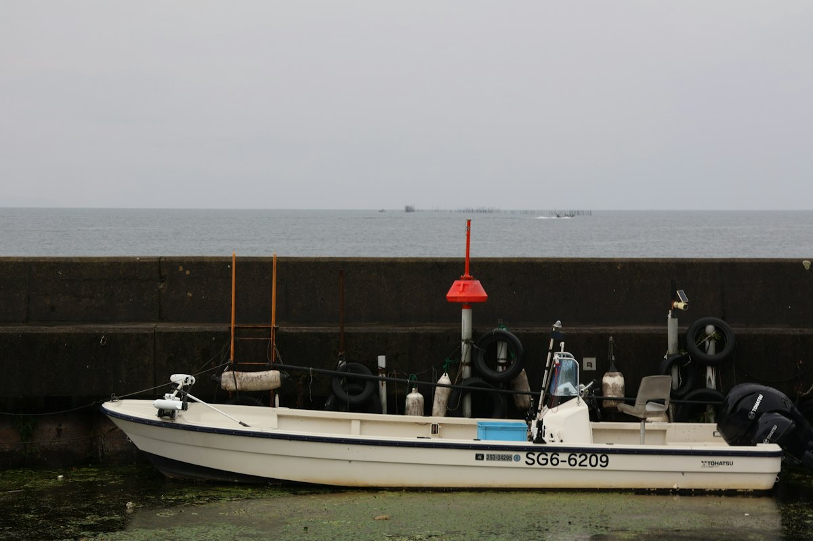
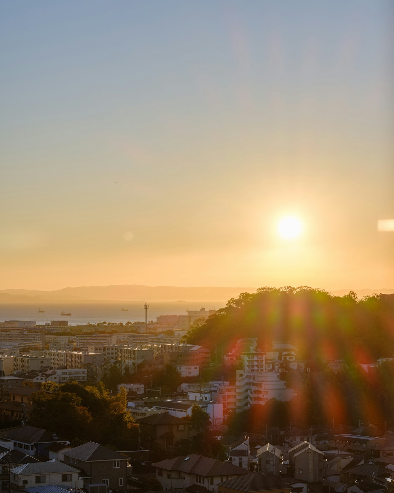
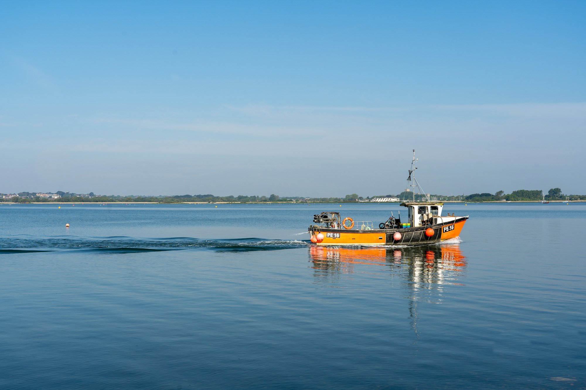

LTアジ
午前船 7:15 午後船 12:30

釣船・BBQ船 横浜市金沢区（八景島シーパラダイス隣）
毎日出航している乗合船、気の合ったお仲間との仕立船。東京湾の季節の釣りの醍醐味を、満喫していただけます。
海の中へ
仕掛けを、
下ろします。
スクロールしてください
毎日出航している乗合船。お一人でも、お仲間とでも。
海の中のイメージです。魚の位置や深さを表すものではありません
乗合は1人はもちろん、2人から多人数様でも対応いたします。3人以上の乗合では、前もって並んで釣座を取ることもできます（釣座のご指定は不可）。
平日はリーズナブルなチャータープランもございます。チャーター船は、夏季は冷房も効いています。

午前船 7:15 午後船 12:30

8:00 出船

クロアナゴ・メバル 17:30 出船

料金は現在のホームページの表示をもとにしています。
| 受付（開門） | 4〜11月 5:00〜／12〜3月 5:30〜 |
|---|---|
| 定休日 | 毎週木曜日 |
ご予約・お問い合わせは、お電話でどうぞ。